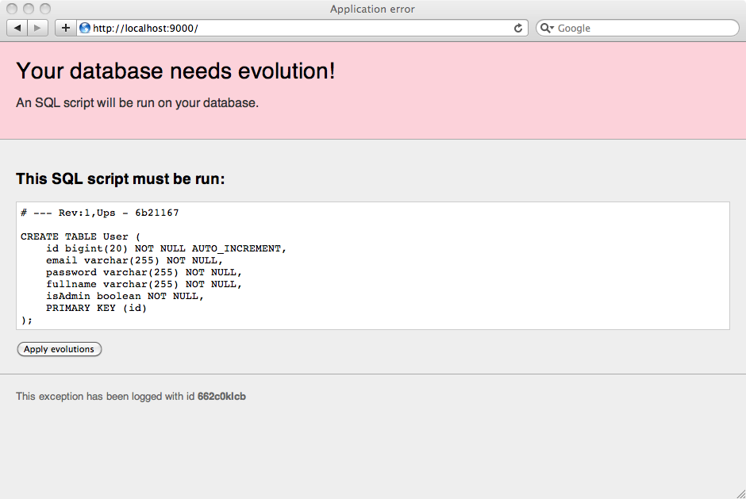
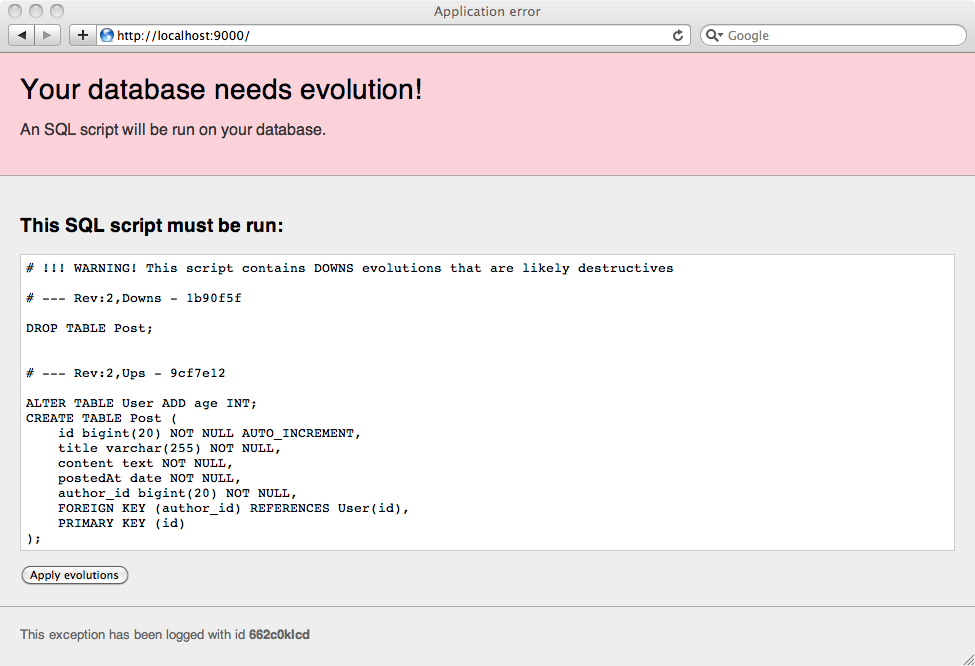
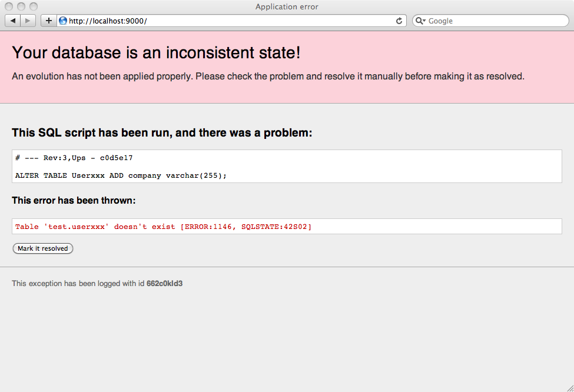
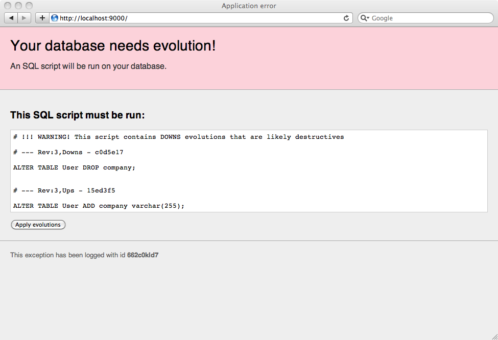

Managing database evolutions
When you use a relational database, you need a way to track and organize your database schema evolutions. Typically there are several situation where you need a more sophisticated way to track your database schema changes:
- When you work within a team of developers, each person needs to know about any schema change.
- When you deploy on a production server, you need to have a robust way to upgrade your database schema.
- If you work on several machines, you need to keep all database schemas synchronized.
If you work with JPA, Hibernate can handle database evolutions for you automatically. Evolutions are useful if you don’t use JPA or if you prefer to manually take care of your database schema for finer tuning.
Evolutions scripts
Play tracks your database evolutions using several evolutions script. These scripts are written in plain old SQL and should be located in the db/evolutions directory of your application.
The first script is named 1.sql, the second script 2.sql, and so on…
Each script contains two parts:
- The Ups part the describe the required transformations.
- The Downs part that describe how to revert them.
For example, take a look at this first evolution script that bootstrap a basic application:
# Users schema
# --- !Ups
CREATE TABLE User (
id bigint(20) NOT NULL AUTO_INCREMENT,
email varchar(255) NOT NULL,
password varchar(255) NOT NULL,
fullname varchar(255) NOT NULL,
isAdmin boolean NOT NULL,
PRIMARY KEY (id)
);
# --- !Downs
DROP TABLE User;
As you see you have to delimitate the both Ups and Downs section by using comments in your SQL script.
Evolutions are automatically activated if a database is configured in application.conf and evolution scripts are present. You can disable them by setting evolutions.enabled to false. For example when tests set up their own database you can disable evolutions for the test environment.
When evolutions are activated, Play will check your database schema state before each request in DEV mode, or before starting the application in PROD mode. In DEV mode, if your database schema is not up to date, an error page will suggest that you synchronise your database schema by running the appropriate SQL script.

If you agree with the SQL script, you can apply it directly by clicking on the ‘Apply evolutions’ button.
If you use an in-memory database (db=mem), Play will automatically run all evolutions scripts if your database is empty.
Synchronizing concurrent changes
Now let’s imagine that we have two developers working on this project. Developer A will work on a feature that requires a new database table. So he will create the following 2.sql evolution script:
# Add Post
# --- !Ups
CREATE TABLE Post (
id bigint(20) NOT NULL AUTO_INCREMENT,
title varchar(255) NOT NULL,
content text NOT NULL,
postedAt date NOT NULL,
author_id bigint(20) NOT NULL,
FOREIGN KEY (author_id) REFERENCES User(id),
PRIMARY KEY (id)
);
# --- !Downs
DROP TABLE Post;
Play will apply this evolution script to Developer A’s database.
On the other hand, developer B will work on a feature that requires altering the User table. So he will also create the following 2.sql evolution script:
# Update User
# --- !Ups
ALTER TABLE User ADD age INT;
# --- !Downs
ALTER TABLE User DROP age;
Developer B finishes his feature and commits (let’s say they are using Git). Now developer A has to merge the his colleague’s work before continuing, so he runs git pull, and the merge has a conflict, like:
Auto-merging db/evolutions/2.sql
CONFLICT (add/add): Merge conflict in db/evolutions/2.sql
Automatic merge failed; fix conflicts and then commit the result.
Each developer has created a 2.sql evolution script. So developer A needs to merge the contents of this file:
<<<<<<< HEAD
# Add Post
# --- !Ups
CREATE TABLE Post (
id bigint(20) NOT NULL AUTO_INCREMENT,
title varchar(255) NOT NULL,
content text NOT NULL,
postedAt date NOT NULL,
author_id bigint(20) NOT NULL,
FOREIGN KEY (author_id) REFERENCES User(id),
PRIMARY KEY (id)
);
# --- !Downs
DROP TABLE Post;
=======
# Update User
# --- !Ups
ALTER TABLE User ADD age INT;
# --- !Downs
ALTER TABLE User DROP age;
>>>>>>> devB
The merge is really easy to do:
# Add Post and update User
# --- !Ups
ALTER TABLE User ADD age INT;
CREATE TABLE Post (
id bigint(20) NOT NULL AUTO_INCREMENT,
title varchar(255) NOT NULL,
content text NOT NULL,
postedAt date NOT NULL,
author_id bigint(20) NOT NULL,
FOREIGN KEY (author_id) REFERENCES User(id),
PRIMARY KEY (id)
);
# --- !Downs
ALTER TABLE User DROP age;
DROP TABLE Post;
This evolution script represents the new revision 2 of the database, that is different of the previous revision 2 that developer A has already applied.
So Play will detect it and ask developer A to synchronize his database by first reverting the old revision 2 already applied, and by applying the new revision 2 script:

Inconsistent states
Sometimes you will make a mistake in your evolution scripts, and they will fail. In this case, Play will mark your database schema as being in an inconsistent state and will ask you to manually resolve the problem before continuing.
For example, the Ups script of this evolution has an error:
# Add another column to User
# --- !Ups
ALTER TABLE Userxxx ADD company varchar(255);
# --- !Downs
ALTER TABLE User DROP company;
So trying to apply this evolution will fail, and Play will mark your database schema as inconsistent:

Now before continuing you have to fix this inconsistency. So you run the fixed SQL command:
ALTER TABLE User ADD company varchar(255);
… and then mark this problem as manually resolved by clicking on the button.
But because your evolution script has errors, you probably want to fix it. So you modify the 3.sql script:
# Add another column to User
# --- !Ups
ALTER TABLE User ADD company varchar(255);
# --- !Downs
ALTER TABLE User DROP company;
Play detects this new evolution that replaces the previous 3 one, and will run the following script:

Now everything is fixed, and you can continue to work.
In developement mode however it is often simpler to simply trash your developement database and reapply all evolutions from the beginning.
Evolutions commands
The evolutions run interactively in DEV mode. However in PROD mode you will have to use the evolutions command to fix your database schema before running your application.
If you try to run a application in production mode on a database that is not up to date, the application will not start.
~ _ _
~ _ __ | | __ _ _ _| |
~ | '_ \| |/ _' | || |_|
~ | __/|_|\____|\__ (_)
~ |_| |__/
~
~ play! master-localbuild, http://www.playframework.org
~ framework ID is prod
~
~ Ctrl+C to stop
~
13:33:22 INFO ~ Starting ~/test
13:33:22 INFO ~ Precompiling ...
13:33:24 INFO ~ Connected to jdbc:mysql://localhost
13:33:24 WARN ~
13:33:24 WARN ~ Your database is not up to date.
13:33:24 WARN ~ Use `play evolutions` command to manage database evolutions.
13:33:24 ERROR ~
@662c6n234
Can't start in PROD mode with errors
Your database needs evolution!
An SQL script will be run on your database.
play.db.Evolutions$InvalidDatabaseRevision
at play.db.Evolutions.checkEvolutionsState(Evolutions.java:323)
at play.db.Evolutions.onApplicationStart(Evolutions.java:197)
at play.Play.start(Play.java:452)
at play.Play.init(Play.java:298)
at play.server.Server.main(Server.java:141)
Exception in thread "main" play.db.Evolutions$InvalidDatabaseRevision
at play.db.Evolutions.checkEvolutionsState(Evolutions.java:323)
at play.db.Evolutions.onApplicationStart(Evolutions.java:197)
at play.Play.start(Play.java:452)
at play.Play.init(Play.java:298)
at play.server.Server.main(Server.java:141)
The error message ask you to run the play evolutions command:
$ play evolutions
~ _ _
~ _ __ | | __ _ _ _| |
~ | '_ \| |/ _' | || |_|
~ | __/|_|\____|\__ (_)
~ |_| |__/
~
~ play! master-localbuild, http://www.playframework.org
~ framework ID is gbo
~
~ Connected to jdbc:mysql://localhost
~ Application revision is 3 [15ed3f5] and Database revision is 0 [da39a3e]
~
~ Your database needs evolutions!
# ----------------------------------------------------------------------------
# --- Rev:1,Ups - 6b21167
CREATE TABLE User (
id bigint(20) NOT NULL AUTO_INCREMENT,
email varchar(255) NOT NULL,
password varchar(255) NOT NULL,
fullname varchar(255) NOT NULL,
isAdmin boolean NOT NULL,
PRIMARY KEY (id)
);
# --- Rev:2,Ups - 9cf7e12
ALTER TABLE User ADD age INT;
CREATE TABLE Post (
id bigint(20) NOT NULL AUTO_INCREMENT,
title varchar(255) NOT NULL,
content text NOT NULL,
postedAt date NOT NULL,
author_id bigint(20) NOT NULL,
FOREIGN KEY (author_id) REFERENCES User(id),
PRIMARY KEY (id)
);
# --- Rev:3,Ups - 15ed3f5
ALTER TABLE User ADD company varchar(255);
# ----------------------------------------------------------------------------
~ Run `play evolutions:apply` to automatically apply this script to the db
~ or apply it yourself and mark it done using `play evolutions:markApplied`
~
If you want Play to automatically run this evolution for you, then run:
$ play evolutions:apply
If you prefer running this script manually on your production database, you need to tell Play that you database is up-to-date by running:
$ play evolutions:markApplied
If there are any errors while automatically running the evolutions scripts, as in DEV mode, you need to manually resolve them, and mark your database schema a fixed by running:
$ play evolutions:resolve
Continuing the discussion
Learn how to configure Logging.